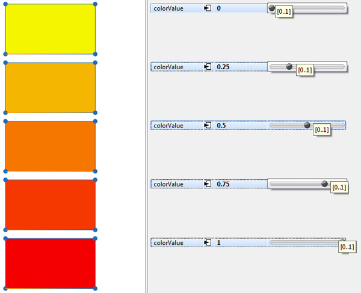

colorRamp function
string colorRamp(gradient, value)
gradient string
| "whiteToBlack", "greenToRed", "yellowToRed", "redToBlue", "orangeToBlue", "brownToBlue", "spectrum" | Different color ramp presets. |
value float A value between 0 and 1.
Returns a hexadecimal color value from a color ramp (selected with gradient) according to the given value. Means the value is mapped on the color ramp and the corresponding color is returned.
Examples
Yellow to red color ramp

@Range(min=0, max=1)
attr colorValue = 1
@StartRule
Shape -->
color ( colorRamp("yellowToRed",colorValue))
To visualize datasets, 'normalize' the values to the [0-1] range with the function " x_norm = 1 / (max - min) * (x - min) ".